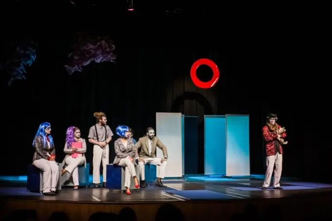
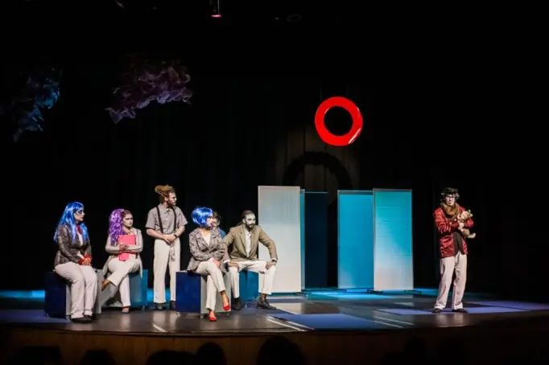

.png)
Tiago de Oliveira é um ator formado pelo Senac São Paulo em 2022, com ampla experiência em atuação teatral e
audiovisual.
Conhecido por sua capacidade de mergulhar profundamente em cada personagem que interpreta, trazendo vida e
segurança a cada projeto.
 

Além de sua carreira como ator, Tiago também é um colaborador ativo em projetos de produção de filmes e
séries.
E está sempre em busca de novas oportunidades para explorar sua criatividade e expandir seus horizontes
artísticos.
Com uma paixão pela arte de contar histórias, Tiago é um talentoso e dedicado ator que certamente acrescentará valor a qualquer projeto que participe.

Anjos da Marquises com Juca de Oliveira
SINOPSE
Paiva é um viúvo aposentado, com tempo ocioso e
sem nenhuma motivação.Em suas caminhadas,
conhece uma
equipe médica que auxilia mendigos
nas ruas da cidade, e acredita ter encontrado um
objetivo,
uma maneira de
ocupar seu tempo livre.
Mas Paiva descobrirá que nem sempre as coisas são
o que parecem ser.
“Anjos das Marquises” ganhou o prêmio de Melhor Drama em Apex Short Film & Music Video Festival (EUA),
Melhor Mistério/Thriller em Souther Shorts Award (EUA); e ainda,
Melhor Roteiro, Melhor Curta e Melhor
Ator (prêmio honorário para Juca de Oliveira) em Long Story Shorts (Romênia). Curta-metragem, ficção,
vídeo digital, roteiro e direção de
Paulo Miranda, produção de Aurora Filmes e SW-VG 94 Produtora, 2017.
IVAN MAVERICK – TUDO BEM (CLIPE OFICIAL)
Iniciada em 2018, Ivan Maverick é uma banda de pop/rock e retrô do interior de São Paulo.
Fruto da mistura de referências culturais e sonoras dos anos 60 e 70 com as atuais, em um esforço de resgate e reconciliação de tendências.